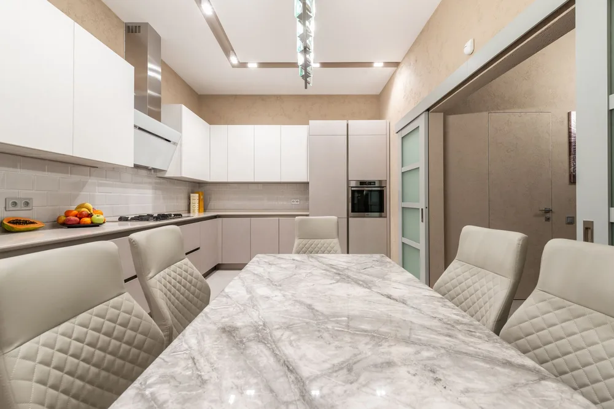
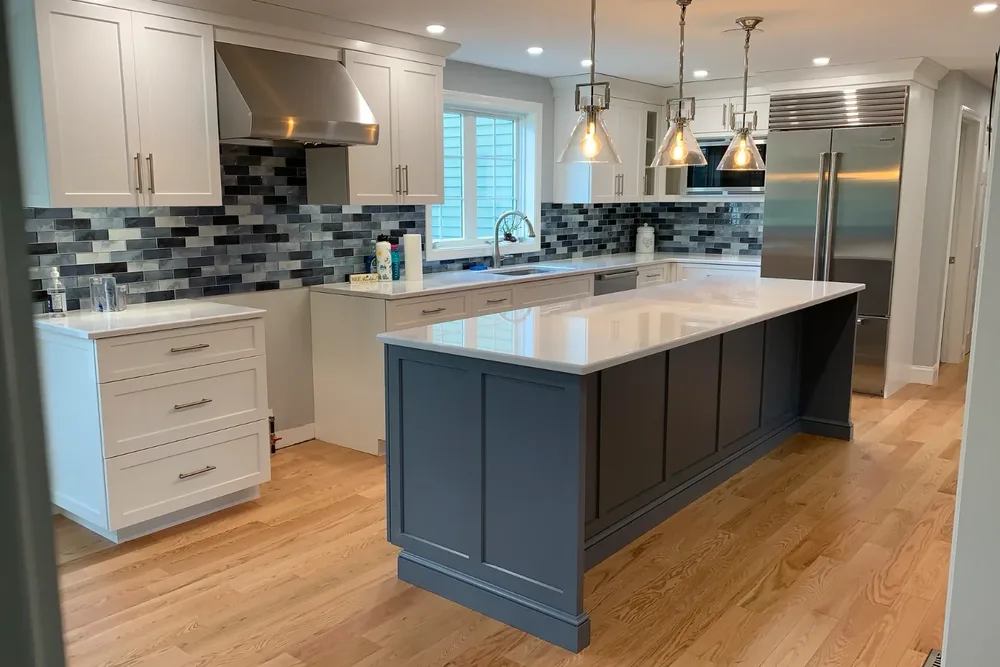
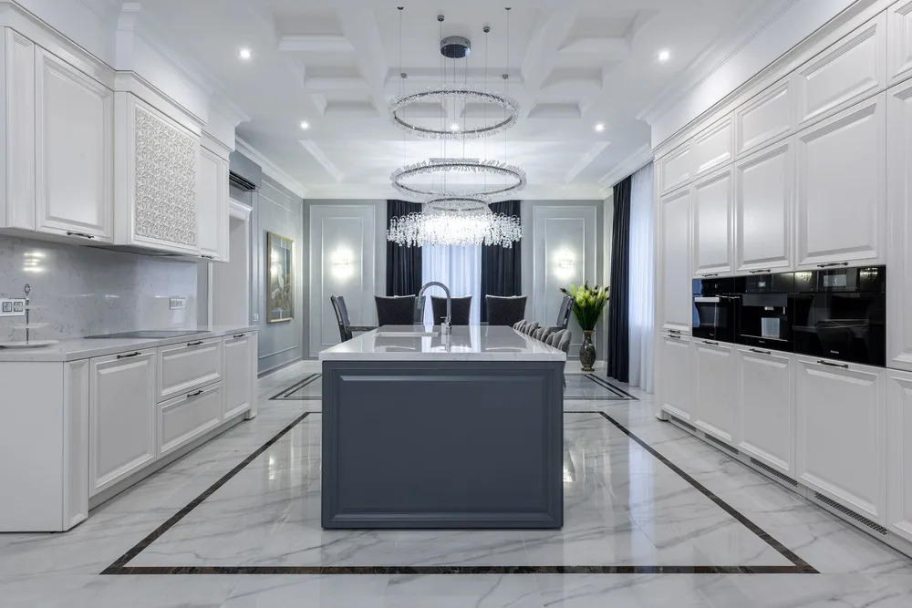
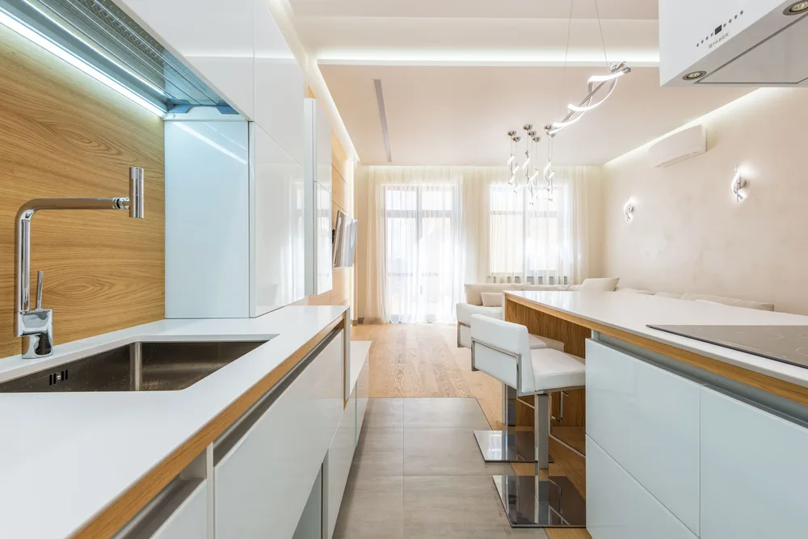
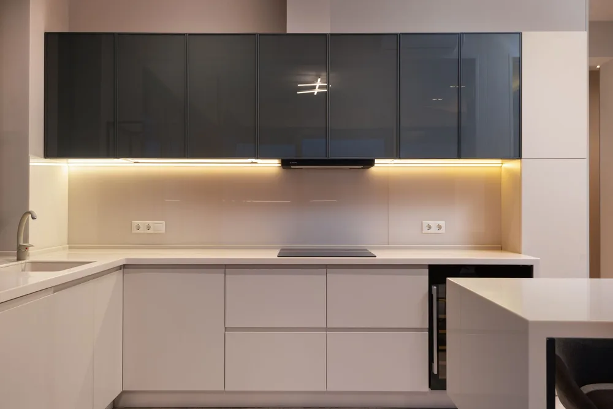
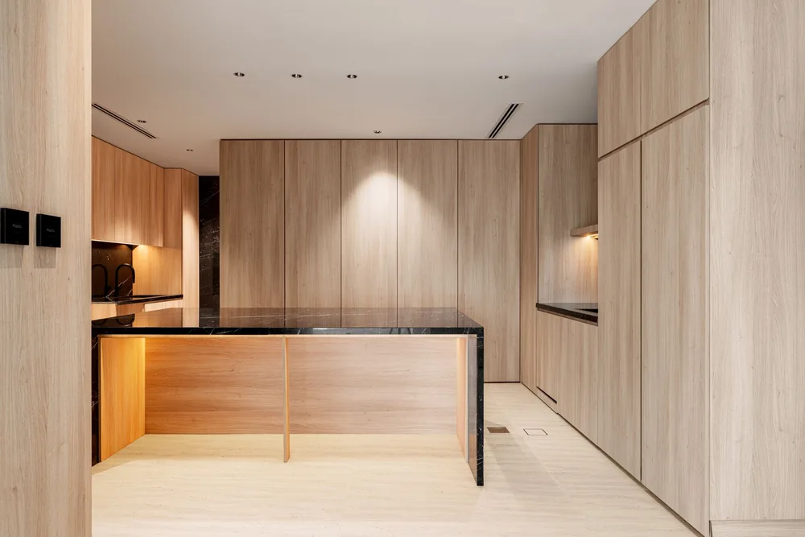
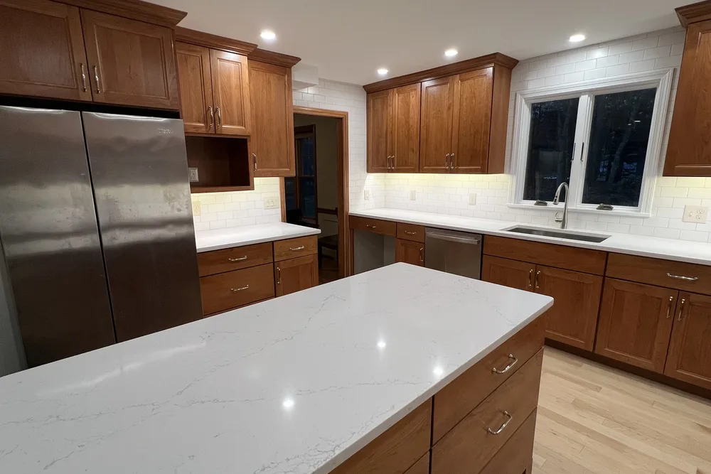
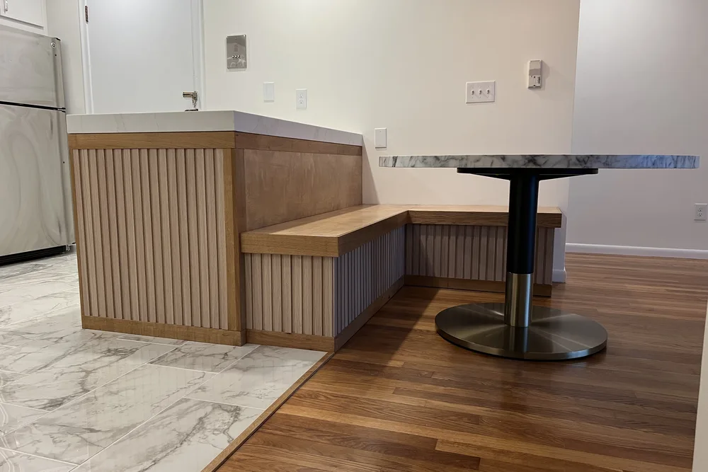

Hamilton kitchen remodeling contractors
Hamilton kitchen remodeling with a layout, materials and finish that fit the home
Hamilton kitchen remodeling from DeFaria Construction sets the scope, materials and sequence before demolition, so the finished kitchen matches how the family cooks and gathers and the budget follows a plan.
Local search focus
Hamilton kitchen remodeling starts with the layout, not the catalog.

Across South Hamilton, The Hamlet, Asbury Grove and Chebacco Woods, Hamilton mixes historic Colonial houses and estate and equestrian homes with 20th-century suburban residences along winding rural roads. DeFaria Construction starts by separating what the kitchen needs from what it should become, so the budget follows a plan instead of a wish list.
This page is built for Hamilton homeowners comparing kitchen remodeling contractors near them. It connects the Hamilton search to project photos, neighborhoods, the full kitchen scope and a direct estimate path.
- Clear estimate conversations before the project starts.
- Direct communication with the homeowner from walkthrough to final walkthrough.
- Local coverage across Hamilton and the wider Essex County area.
The scope
What a full Hamilton kitchen remodel covers

In Hamilton, historic Colonial houses and large estate homes along winding rural roads often add layout and access constraints.
- Layout, cabinets and island placement planned around how you cook and gather.
- Counters, backsplash and flooring coordinated so materials land in the right sequence.
- Electrical, lighting and plumbing rough-in done before the finishes.
Hamilton permits and inspections run through the Town of Hamilton Building Department, and DeFaria keeps that step organized so scope and timeline stay realistic.
Cost
How much does a kitchen remodel cost in Hamilton?

A kitchen remodel in Hamilton usually runs from about $25,000 to $50,000 for a mid-range remodel, and $50,000 to $85,000 or more for a large kitchen or high-end finishes. Cabinets, counters and layout changes move the number the most.
- Whether cabinets are stock, semi-custom or custom.
- Countertop choice, from laminate to quartz or granite.
- Any layout change, or moving plumbing, gas or walls.
- Appliances, lighting and the age and structure of the home.
In Hamilton, historic Colonial houses and large estate homes along winding rural roads often add layout and access constraints, so the estimate accounts for access, structure and prep before a single fixture is ordered.
DeFaria gives a fixed, itemized Hamilton estimate at the walkthrough, so the price matches the actual scope instead of a guess.
Process
How a Hamilton kitchen remodel runs, step by step

A Hamilton kitchen remodel moves through set stages, so you can see what comes next.
- A walkthrough and a clear, itemized estimate.
- Layout, cabinet and material selections.
- Home protection and demolition.
- Rough-in for electrical, lighting and plumbing.
- Cabinets, countertops and backsplash installed.
- Flooring, appliances and finish carpentry.
- Paint, punch list and a final walkthrough with you.
DeFaria coordinates the Hamilton permit with the Town of Hamilton Building Department before the rough-in, and keeps you updated at each step.
Most Hamilton kitchen remodels take about 3 to 6 weeks once cabinets and materials arrive, depending on the scope.
Materials
Materials and finishes for a lasting Hamilton kitchen

A Hamilton kitchen sees daily wear, so cabinets, counters and flooring are chosen to hold up, not just to photograph well.
- Solid cabinet boxes and quality hardware that survive daily use.
- Quartz or granite counters, sealed and installed correctly.
- Durable, water-tolerant flooring for a busy kitchen.
- A backsplash and lighting layered for prep, cleanup and ambiance.
From South Hamilton to Asbury Grove, historic Colonial houses and large estate homes along winding rural roads often add layout and access constraints, which is exactly why the finish is specified for the home rather than a catalog.
When to remodel
Signs it is time to remodel your Hamilton kitchen

A few clear signs a Hamilton kitchen is ready for a remodel:
- Storage and prep space that run out fast.
- Cabinets and surfaces that look and feel past their prime.
- A layout that fights how the household actually moves.
- Old appliances or wiring that cannot keep up.
- Getting the home market-ready.
They are common across Hamilton, from South Hamilton to Asbury Grove.
Project photos
Kitchen Remodeling photos for Hamilton homeowners
The Hamilton kitchen remodeling page pairs local search intent with real project photos, so visitors see the finish level before requesting an estimate.


Areas covered
Kitchen Remodeling across Hamilton neighborhoods
DeFaria Construction supports kitchen remodeling searches across Hamilton and nearby Essex County towns, giving visitors enough local context to decide whether DeFaria is the right fit before they call.
Whether the home is near South Hamilton, The Hamlet or Chebacco Woods, the Hamilton kitchen remodeling is planned for the local housing stock and permitted through the Town of Hamilton Building Department.
- South Hamilton
- The Hamlet
- Asbury Grove
- Chebacco Woods
Experience
Why this Hamilton page is built for real homeowners, not just keywords.
DeFaria Construction is a local, owner-led remodeling company working across Essex County and Middlesex County. With Luiz DeFaria involved directly and an A+ BBB record behind the work, the Hamilton kitchen page is written around real scope, material planning and finish coordination, not a city name dropped into a template.
DeFaria Construction is a licensed and insured local contractor with an A+ BBB rating and verified customer reviews, and every Hamilton project is owner-led by Luiz DeFaria from the first walkthrough to the final one.
"they walked our Hamilton kitchen with us before quoting anything, so the price actually matched the plan."
Hamilton homeowner
The goal is to help someone searching for Hamilton kitchen remodeling contractors understand the scope, the neighborhoods covered and how to start a direct conversation before requesting a free estimate.
Call (617) 893-2221 for a free estimateFAQ
Common questions about kitchen remodeling in Hamilton
What kitchen remodeling work does DeFaria Construction handle in Hamilton?
In Hamilton DeFaria Construction handles cabinet layout, countertops, backsplash, flooring, lighting and plumbing coordination, along with the demolition and finish carpentry a full kitchen remodel needs.
How much does a kitchen remodel cost in Hamilton?
A Hamilton kitchen remodel usually runs from about $25,000 to $50,000 for a mid-range remodel, and $50,000 to $85,000 or more for a large kitchen or high-end finishes. DeFaria gives a fixed, itemized estimate at the walkthrough so the price matches the real scope.
How long does a Hamilton kitchen remodel usually take?
Most Hamilton kitchen remodels take about 3 to 6 weeks once cabinets and materials arrive, depending on scope and whether the layout changes. DeFaria sets a realistic sequence at the walkthrough instead of promising a date before the scope is clear.
Do older Hamilton homes make kitchen remodeling harder?
They can. In Hamilton, historic Colonial houses and large estate homes along winding rural roads often add layout and access constraints. DeFaria plans around existing structure, access and finishes so surprises are handled in the estimate, not mid-project.
Is DeFaria Construction licensed and insured?
Yes. DeFaria Construction is a licensed and insured contractor with an A+ BBB rating and verified reviews, and every Hamilton project is owner-led by Luiz DeFaria.
Does DeFaria handle Hamilton kitchen permits and inspections?
Yes. Hamilton permits and inspections run through the Town of Hamilton Building Department, and DeFaria keeps that step organized so scope and timeline stay realistic.